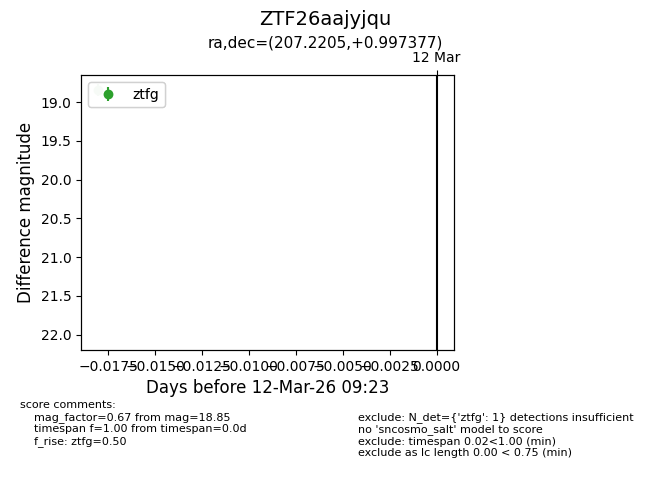
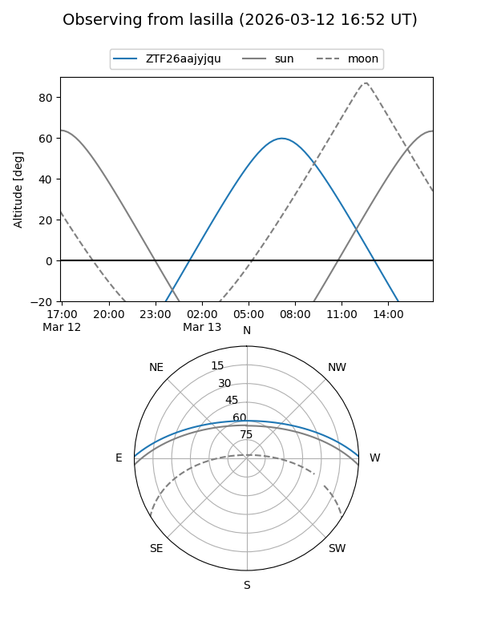
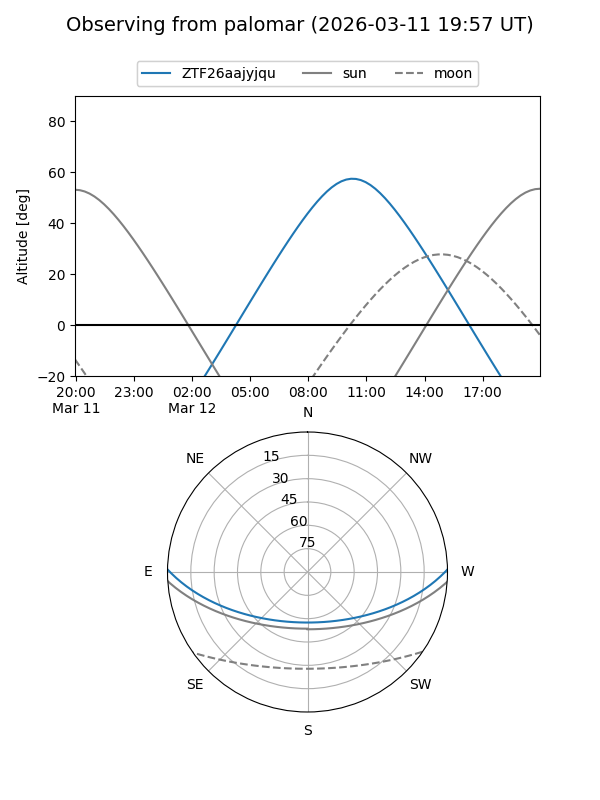
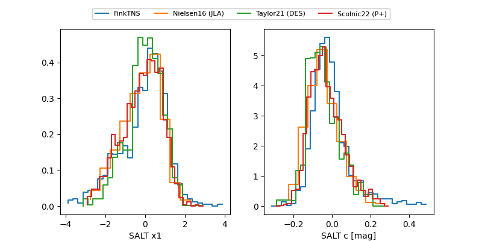

ZTF26aajyjqu
Target ZTF26aajyjqu at 2026-03-12 09:25
Aliases and brokers:
FINK: link
Lasair: link
ALeRCE: link
alt names
ZTF26aajyjqu (ztf,fink_ztf)
Coordinates:
equatorial (ra, dec) = 207.2205,+0.99738
equatorial (HMS+DMS) = 13:48:52.92,+00:59:50.56
galactic (l, b) = (333.1272,+60.45681)
Flags:
Photometry:
last ztfg=18.85
1 ztfg detections
Lightcurve

Visibility


Additional plots
